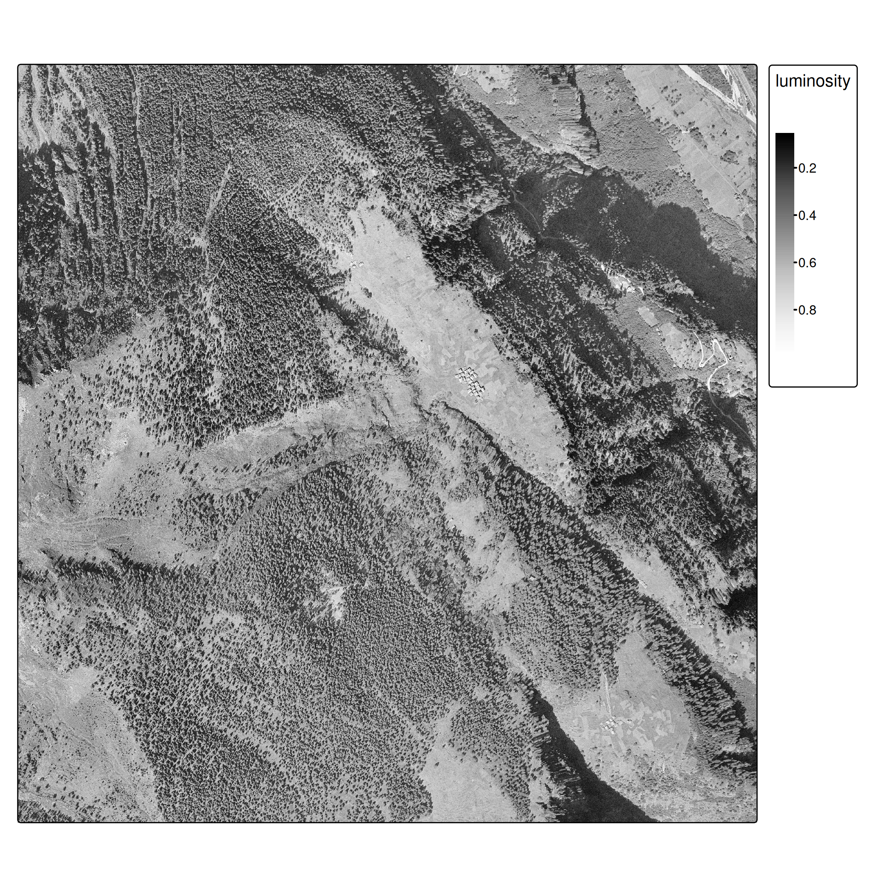
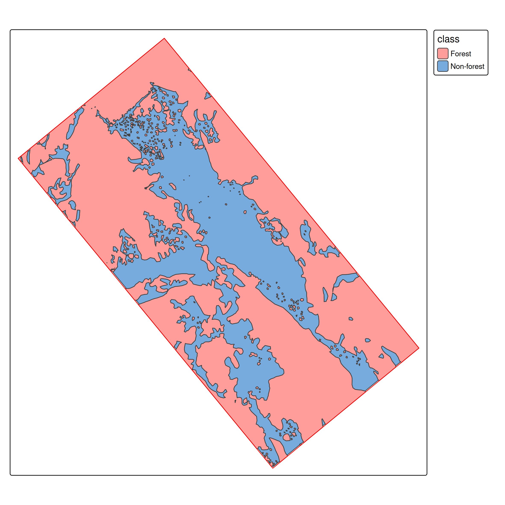
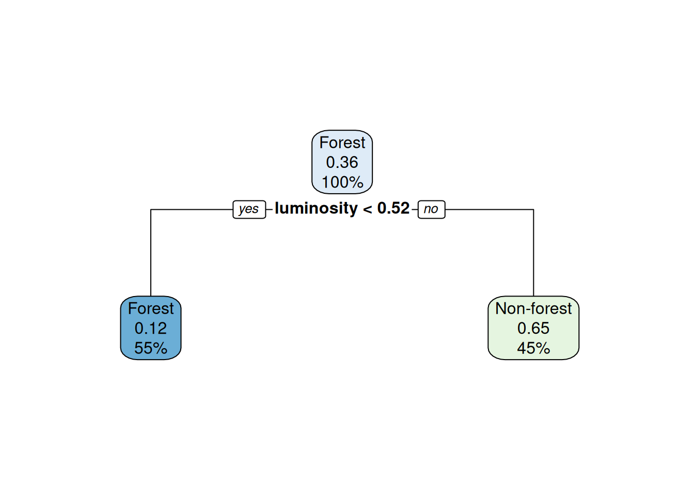
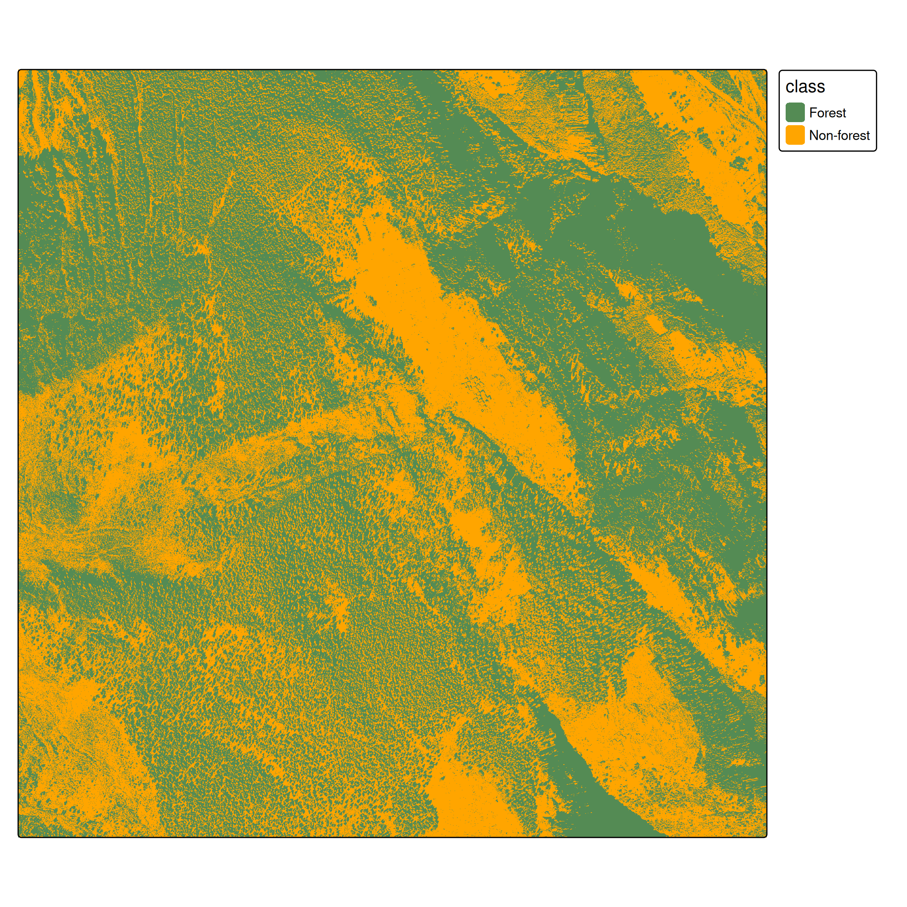
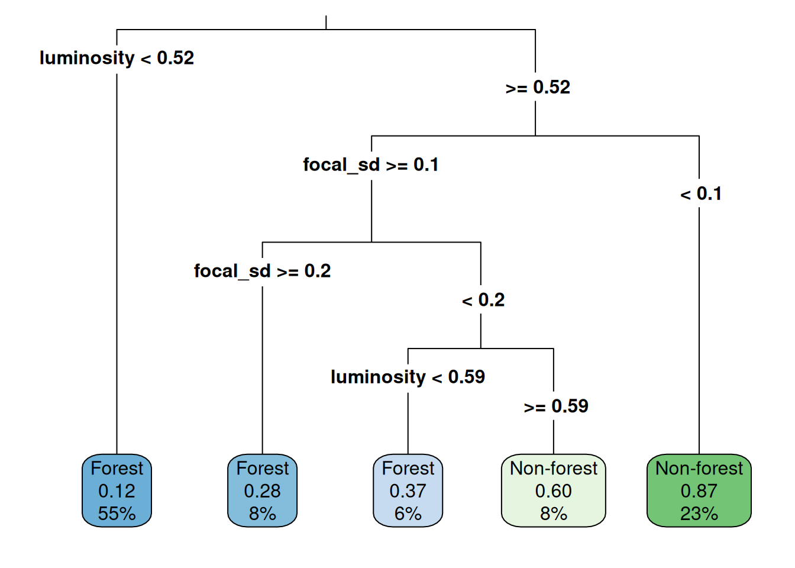

Supervised Classification in Remote Sensing
Introduction
- This lesson demonstrates supervised classification applied to remote sensing imagery
- We’ll classify historic aerial imagery from 1961 to distinguish forest from non-forest areas in Ces, Ticino, Switzerland
- Key focus: The spatial data workflow using terra/sf, not basic ML concepts
What makes RS classification different?
- Spatial structure: Pixels are not independent - spatial autocorrelation matters
- Scale of prediction: We predict on entire rasters (millions of pixels), not just point datasets
- Spatial sampling: Ground truth comes from polygons, requiring careful sampling strategies
- Feature engineering: Spatial context (focal operations) is critical, not just pixel values
Data
- Historic aerial imagery from 1961 (swisstopo)
- Single band (grayscale), 0.5 m/pixel resolution
- Images available for: 1961, 1971, 1977, 1983, 1989, 1995
- Ground truth forest polygons (hand-digitized)

Workflow Overview
- Load ground truth polygons and generate point samples
- Spatial train/test split (⚠ autocorrelation)
- Extract raster features using
extract() - Train classifier (CART for interpretability)
- Predict on entire raster
- Evaluate and compare approaches
Ground Truth & Spatial Sampling
From polygons to points
Unlike standard ML datasets, our ground truth comes as spatial polygons.

We need point samples for training:

Sample points from forest (green) and non-forest (orange) polygons
st_sample()
- Ensures spatial coverage across polygon extents
- Creates balanced datasets
- Simple random sampling across the entire study region (more sophisticated strategies exist)
Train/test split: The spatial autocorrelation problem
Important
Spatial autocorrelation issue: Random splits violate independence assumptions because nearby pixels are correlated. Proper approaches use spatial cross-validation (Brenning 2023; Schratz et al. 2021). We use random splits here for simplicity, but be aware this may overestimate performance.
Approach 1: Single-Band Classifier
Feature extraction with terra::extract()
class luminosity
1 Non-forest 0.6352941
2 Forest 0.2078431
3 Forest 0.3960784
4 Forest 0.2980392
5 Forest 0.1294118
6 Non-forest 0.6980392Training
We use CART (decision trees) for interpretability. As experienced ML practitioners, feel free to substitute with Random Forest, XGBoost, etc.

Figure 1: Decision tree for single-band classification
Raster prediction

Classification result - single band approach
Evaluation
Actual
|
||
|---|---|---|
| Forest | Non-forest | |
| Forest | 137 | 22 |
| Non-forest | 55 | 87 |
Overall accuracy: 0.74
The Spatial Context Problem
- At pixel level, it is hard to distinguish forest from non-forest
- Spatial context is essential: Humans use spatial context (texture, patterns, neighbors) to classify land cover

Figure 2
Approach 2: Adding Spatial Features
- Focal operations as feature extractors: Focal operations aggregate neighborhood values, providing spatial context

Normalization for multi-feature learning
When combining features, normalize to [0,1] using min-max scaling:
\[x' = \frac{x - \min(x)}{\max(x) - \min(x)}\]
minmax_normalization <- function(x){
minmax_vals <- minmax(x)[,1]
(x - minmax_vals[1]) / (minmax_vals[2] - minmax_vals[1])
}
ces1961_focal_sd <- minmax_normalization(ces1961_focal_sd)
# Combine original and focal features
ces_multi <- c(ces1961, ces1961_focal_sd)
names(ces_multi) <- c("luminosity", "focal_sd")Training with spatial features

Figure 4: Decision tree now uses both luminosity and spatial texture
Prediction and evaluation
Actual
|
||
|---|---|---|
| Forest | Non-forest | |
| Forest | 175 | 37 |
| Non-forest | 17 | 72 |
Overall accuracy: 0.82 (vs. 0.74 without spatial features)
Further improvements
For advanced applications, consider:
- More focal features: mean, variance, edge detection filters
- Multi-scale features: focal operations at different window sizes
- Deep learning: CNNs naturally capture spatial context
- Object-based classification: segment first, then classify
- Proper spatial CV: Use spatial blocking for more realistic evaluation
Tasks
Core exercises
- Download datasets (ces_polygons.gpkg and TIF files for 1961-1995) from Moodle
- Implement the complete workflow:
- Load and sample spatial ground truth
- Train classifier (single band or with additional features)
- Evaluate with confusion matrix
- Apply model temporally and analyze forest cover trends